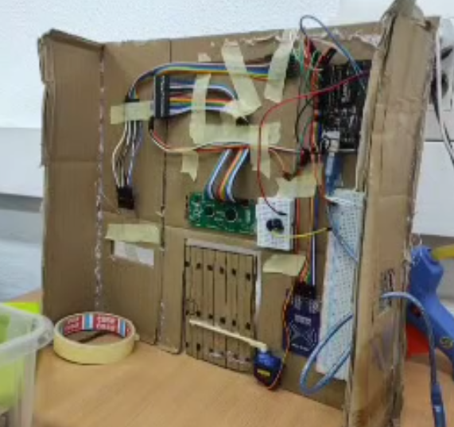
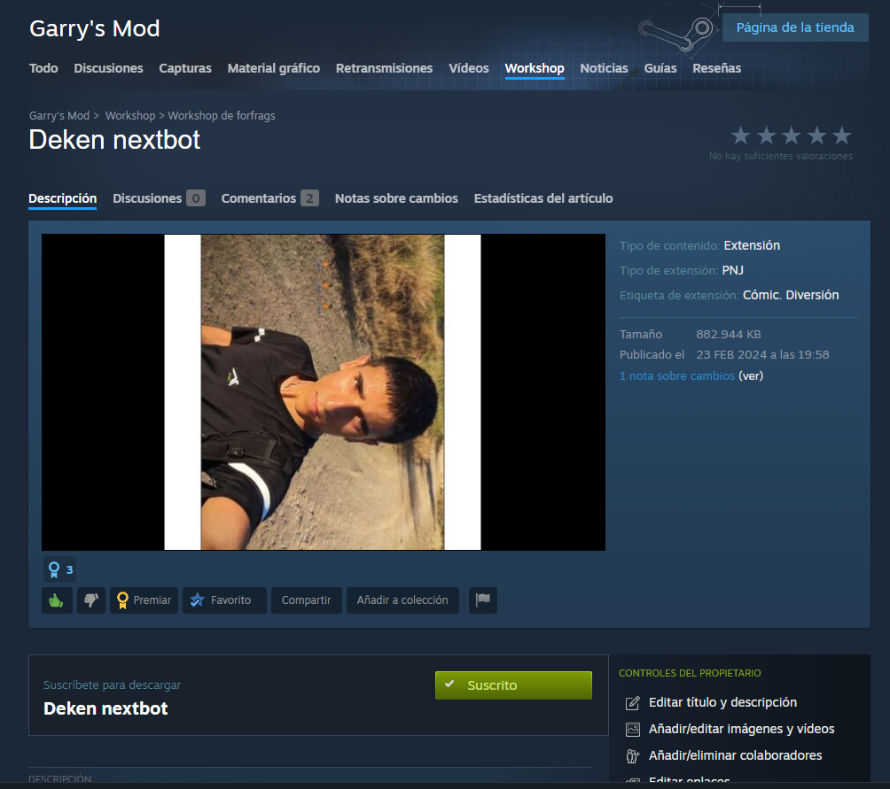
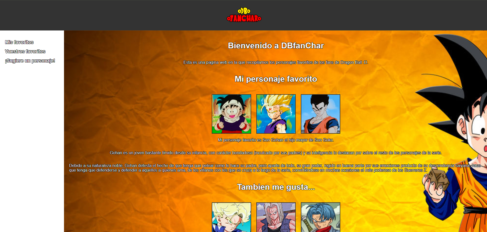

Projectes
- Lock NFC
- Deken nextbot
- DBfanChar
Lock NFC
Pany d'arduino amb lectura de tarjetas NFC
- Crear el circuit a Arduino
- Crear el codig
- Montar-ho tot a la maqueta

Deken Nextbot
Mod del joc Garry's mod d'una entitat que et segueix
- Codejar les funcions de l'entitat
- Posar les textures adecuades
- Corregir alguns errors y publicar-ho

DBfanChar
Pagina d'html per a dir els personatges preferits de la cominutat de Dragon ball
- Crear el codig d'html
- Decoraro tot amb els marges y fondos
- Crear dos pagines mes
